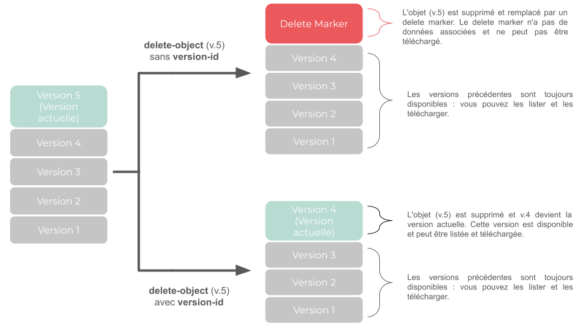

À propos des delete markers
Lorsque vous supprimez un objet contenu dans un bucket où le versioning a été activé, un delete marker est automatiquement créé. Dans S3, un delete marker est un espace réservé indiquant que l’objet a été supprimé mais que celui-ci reste dans le bucket. Les objets supprimés ou écrasés sont considérés comme non actuels, ce qui signifie qu’ils ne sont plus la dernière version mais qu’ils sont toujours conservés dans l’historique des versions du bucket.
Caractéristiques d’un delete marker
Un delete marker :
-
Remplace la version actuelle d’un objet mais n’a pas de données associées.
-
A une taille de 1 à 4 octets par caractère dans sa clé.
-
A la même clé que l’objet que vous avez supprimé.
-
Possède son propre identifiant.
-
N’a pas d’ACL associé.
-
Ne peut pas être téléchargé. Si vous essayez de télécharger un delete marker, un message d’erreur
NoSuchKeys’affiche car le delete marker n’a pas de données associées. -
Ne peut être supprimé que par le propriétaire de l’objet.
Un delete marker n’est pas considéré comme un objet puisqu’il n’a pas de données associées. Par conséquent, il n’est pas affiché si vous listez les objets contenus dans vos buckets. Pour en savoir plus sur les versions et les delete markers de vos objets, voir Lister les versions d’un objet.
Si plusieurs versions d’un même objet ont été créées à l’aide du versioning, vous devez donc supprimer chaque version une par une à l’aide de son ID pour supprimer complètement l’objet. Si vous ne spécifiez pas l’ID de la version, un delete marker est créé, remplaçant la version actuelle de l’objet. Si vous supprimez un objet sans spécifier son ID de version et que sa version actuelle est déjà un delete marker, un nouveau delete marker est ajouté dans le bucket.
Comment supprimer un delete marker
Pour supprimer un delete marker, vous devez utiliser la commande delete-object et spécifier l’ID de la version du delete marker. Pour en savoir plus, voir Supprimer les objets d’un bucket.
Lorsque vous supprimez complètement tous les delete markers, la dernière version de l’objet devient la version actuelle et est affichée dans la liste de vos objets. Vous pouvez toujours télécharger les versions précédentes de vos objets. Pour en savoir plus, voir Lister les versions d’un objet.

Pages connexes